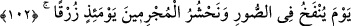
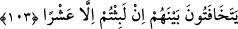

üzerine Allah Teâlâ: “Ey Mûsâ, yerleri ve gökleri terazinin bir kefesine, “Lâ ilâhe
illallah” kelimesini ise öbür kefesine koysan muhakkak bu kelime ağır gelir.”
buyurdu.
Fakir (Bursevî) der ki:
İstersen olmak Hakk’a âgâh
Devamlı söyle: Lâ ilâhe illallah
Bu kelime oldu zikrin efdali
O’nu seven herkes çok zikretmeli
102. O günde Sûr’a üflenir ve biz o zaman günahkârları, gözleri (korkudan)
gömgök bir halde mahşerde toplarız.
“O günde” kıyamet gününde “Sûr’a üflenir”; “ey Muhammed, İsrâfil’in boynuzla
sûra üfleyeceği günü kavmine hatırlat. “Ve biz o zaman günahkârları, gözleri”
korkudan “gömgök olarak mahşerde toplarız.” Yani o gün günah denizine dalmış olan
kâfirleri ve müşrikleri kabirlerinden çıkarır ve sûra üflendiği gün onları bir arada
toplarız.
Haşrin ancak sûra üflendiği gün vukû bulacağı belli olduğu halde açıkça zikredilmesi,
korkutmak içindir.
Gök gözlülük, araplara göre en kötü göz rengidir. Çünkü onların en büyük düşmanları
olan Rumlar gök gözlü idi.
İmam (Râğıb) el-Müfredât’ta şöyle der: “Gözleri gömgök olarak” Yâni gözleri kör
ve gözlerinde nûr olmayarak, demektir. Çünkü âmânın gözbebeği mavi olur.Yâni gözün
nûru giderse, göz göğerir.”
103. Aralarında birbirlerine gizli gizli şöyle derler: “Dünyada sadece on gün
kaldınız.”
“Aralarında birbirlerine gizli gizli şöyle derler:” Yani, benliklerini kaplayan korku,
ürperti ve zaafları sebebiyle onlardan bazıları, seslerini yükseltmeksizin diğerlerine
gizlice şunları söyler: ”Dünyada” ya da kabirde “sadece on gün” on gece ya da on
saat “kaldınız.” Bu sözü dünyada kaldıkları müddeti kısa buldukları için söylerler.
Çünkü bolluk ve rahat içinde geçirilen günler azdır. Saatler, bulutların geçip gitmesi
gibi akıp gider.